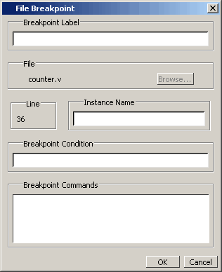

You can easily
modify a file-line breakpoints.
Procedure
- Select from
the Main menus. This will open the Modify Breakpoints dialog (Figure 1), which displays a list of all breakpoints
in the design.
- When you select a file-line
breakpoint from the list and click the Modify button, the File Breakpoint
dialog (Figure 1) opens, allowing you to modify the
breakpoint.
Figure 1. File Breakpoint Dialog Box